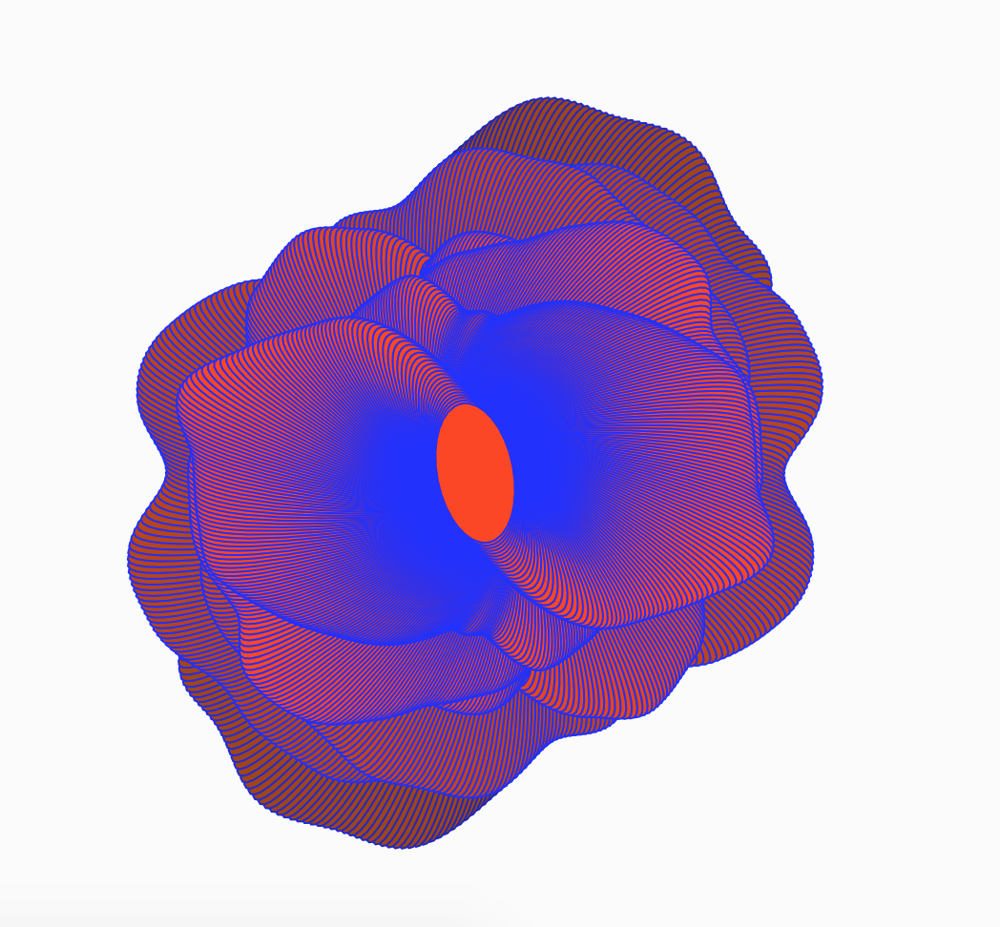
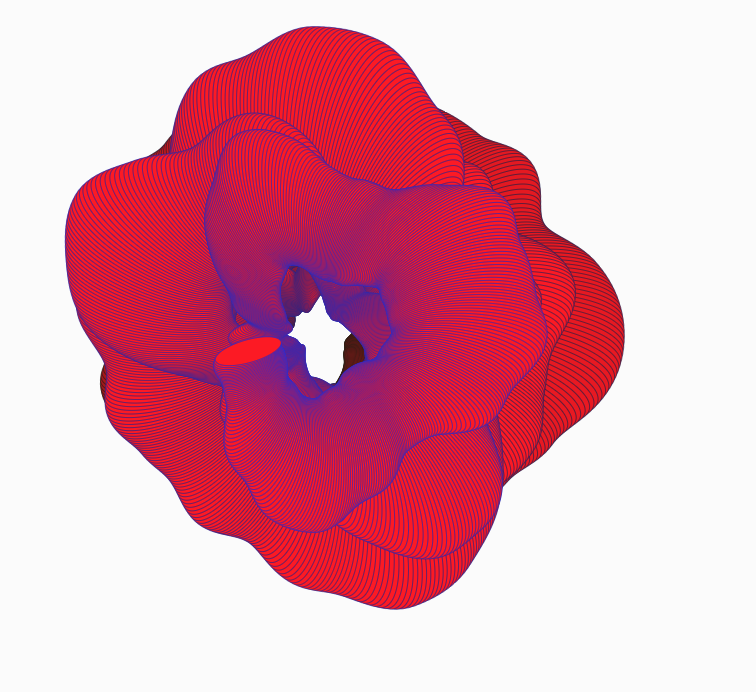

This is a collection of flowers I created using P5 and Javascript.
The code behind these flowers was simple yet effective.
Using noise as the focus of my study, I observed a clear rotational
pattern and integrated bright saturated colors to create these floral images.

